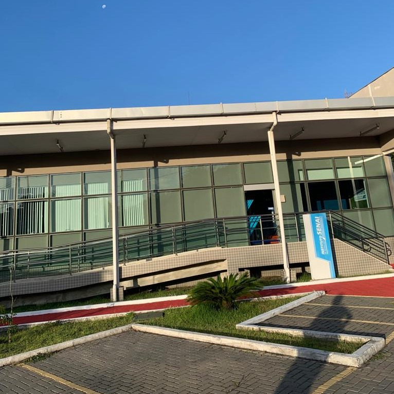

22 de Maio de 2023
Instituto Senai de Tecnologia

Há cerca de um ano iniciei meu estágio no Instituto Senai de
Tecnologia, atuei no setor de P&D nas áreas de Automação e Robótica,
atualmente iniciei minha graduação em engenharia da computação e estou
participando no NLW da RocketSeat, onde tive a oportunidade de criar
meu primeiro site.